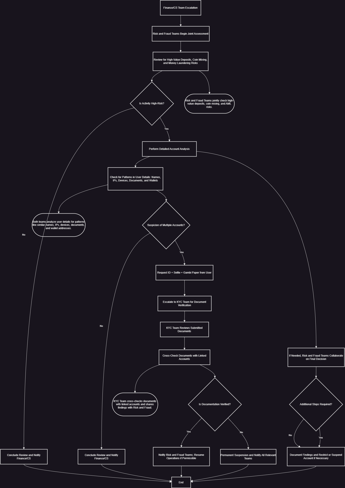

Workflow Diagram
Introduction
This SOP outlines the joint efforts of the Risk, Fraud, and KYC teams in identifying, investigating, and handling high-risk user activities.
Roles and Responsibilities
- Risk Team: Assess risks associated with high-value deposits and coin mixing behaviors.
- Fraud Team: Investigate patterns indicating multi-account usage, referral abuse, and other fraudulent behaviors.
- KYC Team: Verify user identity through document review when escalated by Risk and Fraud teams.
Step-by-Step Procedure
1. Joint Initial Assessment by Risk and Fraud Teams
Both teams assess high-value deposits and look for signs of coin mixing or other AML risks. If suspicious activity is detected, proceed to detailed account analysis.
2. Detailed Account Analysis
Analyze user account details, looking for similar names, IPs, devices, and wallet addresses. If multi-account use is suspected, request ID, selfie, and Gambi paper.
3. Document Verification by KYC Team
The KYC Team verifies submitted documents and checks consistency with linked accounts. If verification fails, apply permanent suspension.
Documentation and Escalation Protocols
For all restrictions or suspensions, document findings in the user account and specify reasons based on collected evidence. Escalate unresolved cases via Slack for collaborative review.